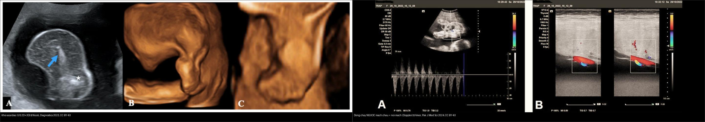
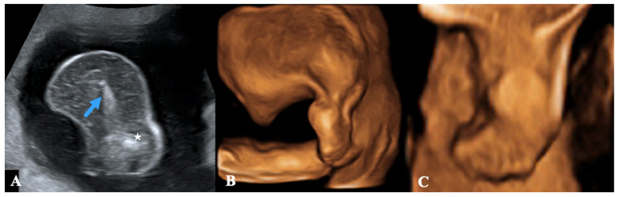
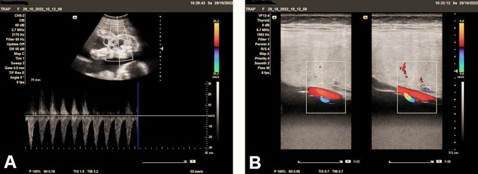
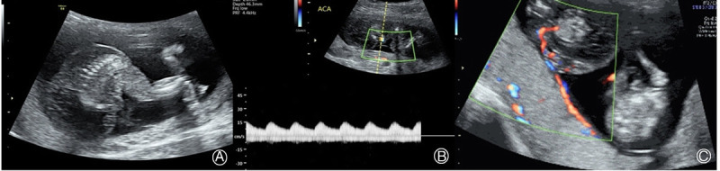
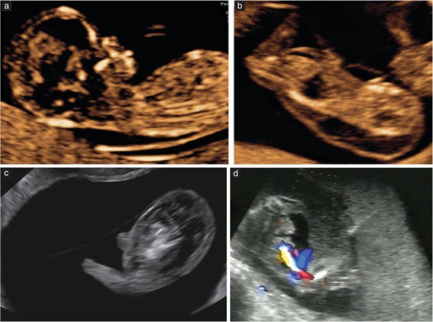
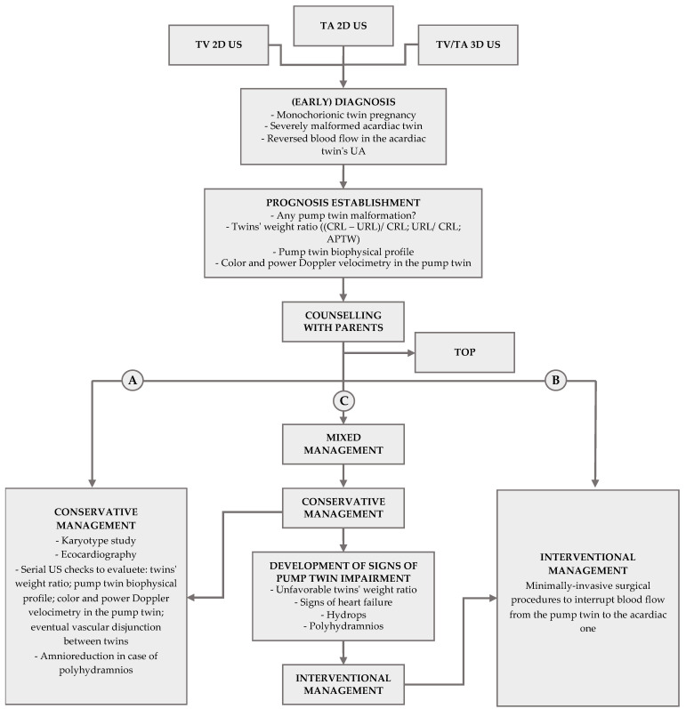

568 — TRAP: song thai đảo ngược tưới máu động mạch & thai acardiac / Twin Reversed Arterial Perfusion
Tags: pattern:song-thai pattern:acardiac pattern:dong-chay-nguoc vung:thai-nhi vung:banh-nhau score:APTW protocol:Doppler-ron protocol:RFA-thai
Mức chắc chắn (certainty): tổng hợp y văn (literature synthesis) — số liệu lấy từ hướng dẫn ISUOG 2025 (PMC11788470), tổng quan Int J Womens Health 2020 (PMC7266514), ca nguyên văn Diagnostics 2023 (PMC10572342) và các ca báo cáo CC BY/BY-NC-ND; ca nguyên văn (verbatim case) dùng cho quiz ghi rõ Fig/PMCID.
1. Tổng quan bệnh học – cơ chế hình ảnh
1.1. TRAP là gì: một "cái bơm" nuôi một "vật ký sinh"
- TRAP (twin reversed arterial perfusion sequence) — còn gọi thai acardiac (acardiac twin / acardius): trong một thai kỳ một bánh nhau (monochorionic, MC), một thai không có tim hoạt động (khối acardiac) sống nhờ thai kia (thai bơm — pump twin) tưới máu ngược dòng.
- Nối mạch là chìa khóa: trên mặt bánh nhau có các nối động mạch–động mạch (arterio-arterial, A-A) — và có khi thêm tĩnh mạch–tĩnh mạch (veno-venous, V-V) — thường qua một chỗ bám rốn chung (ISUOG 2025).
- TẠI SAO gọi là "đảo ngược" (reversed): máu từ động mạch rốn của thai bơm, qua nối A-A, chảy ngược vào động mạch rốn của khối acardiac, đi nuôi khối này rồi quay về thai bơm qua nối V-V. Vì máu đến khối acardiac đã mất oxy (máu từ động mạch "đã dùng"), khối phát triển từ dưới lên: phần dưới (chậu, chi dưới) hình thành trước và tốt, phần trên (đầu, ngực, tim) thiếu/hỏng — đó là cơ sở phân loại thể acardiac.
- TẠI SAO thai bơm suy: thai bơm phải gánh cả hai vòng tuần hoàn → tăng cung lượng (hyperdynamic) → suy tim cung lượng cao → phù thai (hydrops), đa ối, chuyển dạ/sinh non, thai lưu. Đồng thời khối acardiac thường to hơn thai bơm gây căng quá mức tử cung → dọa sinh non, vỡ ối non.
1.2. Ngưỡng định lượng phải nhớ (theo Argon, cửa 1)
- Tần suất: TRAP chiếm ~2,5% song thai một bánh nhau (MC) và ~1/15.000 thai kỳ nói chung (ISUOG 2025). Các tổng quan gần đây ghi ~2,6% song thai một hợp tử và 1/9.500–11.000 thai kỳ (PMC7266514, van Gemert) — con số đang tăng nhẹ do chẩn đoán siêu âm tốt hơn và hỗ trợ sinh sản.
- Tiên lượng: thai acardiac tử vong ~100%; thai bơm tử vong chu sinh ~50–55% nếu không can thiệp (PMC7266514); quản lý bảo tồn, nguy cơ thai bơm tử vong tới ~30% trước 18 tuần (ISUOG 2025).
- Tỷ lệ cân nặng acardiac/thai bơm (APTW — acardiac-to-pump twin weight ratio), theo Moore:
- APTW > 0,7: sinh non 90%, đa ối 40%, suy tim 30%.
- APTW < 0,7: sinh non 75%, đa ối 30%, suy tim 10% (PMC10572342).
- Sinh non < 32 tuần trong TRAP ~10% (ISUOG 2025).
- Sau can thiệp RFA (radiofrequency ablation — đốt sóng cao tần): sống sơ sinh ~85% (75/88 thai kỳ); biến chứng hay gặp nhất là vỡ ối non (pPROM) ~22% (19/85) (PMC7266514).
- Phát triển thần kinh sau RFA: trung vị thương số phát triển DQ 111 (80–150), tỷ lệ chậm phát triển thần kinh NDD 0% (0/27 trẻ) (PMC9291518, Ozawa).
2. Mẫu hình + chẩn đoán phân biệt theo vị trí (gamut)
2.1. Mẫu hình cốt lõi: "một thai bình thường + một khối cạnh thai trong một buồng ối"
- Dấu hiệu chốt trên siêu âm: một thai có tim đập bình thường; cạnh đó là khối mô dị dạng không có tim, không có đầu/ngực rõ hoặc chỉ có chi dưới; Doppler màu thấy dòng chảy trong khối, và spectral Doppler chứng minh dòng NGƯỢC trong động mạch rốn/động mạch chậu của khối.
- Bối cảnh bắt buộc: thai kỳ MC (phải xác định màng đệm–màng ối trước — xem bài 566); TRAP gặp cả MA (monoamniotic) lẫn DA (diamniotic).
- Thể giải phẫu của khối acardiac (4 thể, PMC10572342):
- Acardius acephalus — thường gặp nhất: chậu và chi dưới phát triển, thiếu đầu và cơ quan ngực, chi trên có thể có/không.
- Acardius anceps — phát triển nhất: có cả chi trên + chi dưới, có đầu/mặt nhưng dị dạng.
- Acardius amorphus — thể ít phát triển nhất: khối vô định hình, không phân biệt được cơ quan/chi.
- Acardius acormus — hiếm nhất: chỉ có đầu là cơ quan nhận diện được.
2.2. Gamut "khối/mô bất thường nằm cạnh một thai bình thường"
- TRAP (acardiac) — luôn có dòng chảy ngược trong mạch khối.
- Thai lưu một bên (single intrauterine demise) — khối có hình dạng thai nhưng tim ngừng, thường co nhỏ/mummified, không thấy dòng ngược; theo dõi thấy thai không lớn.
- Teratoma bánh nhau / nang bánh nhau — tổn thương nằm trong bánh nhau, không có trục thân/chi có cấu trúc thai.
- Quái thai khác (fetus acardiac trong conjoined/parasitic twin) — khối dính vào thai chính, có tim chung/gắn liền cơ thể, bối cảnh song thai dính.
- Bánh nhau hai thùy (placenta bipartita) — "khối" thực chất là một thùy bánh nhau phụ; không có dòng ngược, không có trục thân (ca thật PMC12605224).
- Vật lạ/nếp gấp màng ối, dây rốn bất thường — không có mô đặc có cấu trúc.
3. Bảng so sánh phân biệt (ma trận đối chiếu)
| Thực thể (entity) | Hình ảnh điển hình (siêu âm/Doppler) | Chốt vào (rule-in) | Chốt loại (rule-out) | Gợi ý xác nhận |
|---|---|---|---|---|
| TRAP / acardiac | Khối dị dạng cạnh thai bình thường: thiếu tim, thiếu đầu/ngực, Doppler có dòng NGƯỢC trong ĐM rốn | Doppler ngược dòng trong khối + thai kỳ MC | Có dòng xuôi bình thường, có tim trong khối → không phải acardiac | Color + spectral Doppler rốn; khám chuyên khoa y học thai |
| Thai lưu một bên (demise) | Khối giống thai nhưng tim ngừng, co nhỏ dần, không tăng kích thước | Tim ngừng + không dòng ngược + không lớn theo thời gian | Dòng ngược + khối lớn dần → TRAP | So chuỗi siêu âm 1–2 tuần |
| Teratoma/nang bánh nhau | Tổn thương trong bánh nhau, hỗn hợp âm/vôi hóa, không trục thân | Không có cấu trúc chi/trục thân thai + không dòng ngược | Có chi/khung chậu + dòng ngược → acardiac | MRI thai khi phân vân |
| Bánh nhau hai thùy | Khối mô giống bánh nhau thứ hai, cấu trúc bánh nhau, mạch nối bánh nhau | Cấu trúc bánh nhau (mạch xoang) + không có mô thai | Có khung chậu/chi + dòng ngược → TRAP | Đối chiếu cả 2 tư thế, MRI |
| Conjoined / parasitic twin | Khối dính liền vào thai chính (có tim chung), không có cổ/ngực tách biệt | Liên tục cơ thể hai thai + có tim | Dòng ngược riêng biệt → TRAP | MRI thai; hội chẩn sản–nhi |

Trái: khối acardiac (mũi tên: di tích cột sống; sao: phần chậu/chi) ở ca 22 tuần — Nicolì P et al., Diagnostics 2023 (PMC10572342), CC BY 4.0. Phải: (A) phổ Doppler dòng chảy và (B) Doppler màu cho thấy dòng chảy NGƯỢC trong mạch chậu của khối + mạch nối nông trên mặt bánh nhau — Amer SAA et al., Pak J Med Sci 2024 (PMC10772415), CC BY 4.0. Ảnh ghép letterbox, giữ nguyên tỷ lệ.3.1. Dấu hiệu chốt trong 3 giây
- MC + một thai thiếu tim + Doppler ngược dòng trong khối = TRAP. Không có dòng ngược = nghĩ thai lưu/teratoma.
- Khối thiếu đầu/ngực, có chậu-chi dưới → acardius acephalus (thể hay gặp).
- Đa ối + tim thai bơm to + TR (hở van ba lá) = thai bơm đang suy → cân nhắc can thiệp.
4. Protocol chụp + hệ phân độ/điểm chuẩn hóa
4.1. Protocol siêu âm
- Xác định màng đệm–màng ối trước (11+0–13+6 tuần) — TRAP chỉ xảy ra ở thai MC.
- 2D + 3D (+4D) đánh giá hình thái khối acardiac; color Doppler + spectral Doppler động mạch rốn của cả hai thai: tìm dòng ngược (chốt chẩn đoán) và động mạch rốn một nhánh (single umbilical artery) của khối (ca PMC10772415).
- Đánh giá thai bơm: kích thước, tim (cardiothoracic ratio, TR), Doppler (UA, DV), có phù (hydrops) không, DVP đa ối.
- Tính tỷ lệ cân nặng acardiac/thai bơm (APTW) — ước lượng cân nặng bằng công thức theo chiều dài khối; theo dõi chuỗi để phát hiện khối lớn dần.
- Theo dõi tại trung tâm y học thai: siêu âm + Doppler mỗi 1–2 tuần; lưu ý theo dõi sát vẫn không ngăn được thai lưu đột ngột (ISUOG 2025).
- MRI thai khi phân vân với teratoma/conjoined hoặc cần đánh giá mô mềm khối.
4.2. Tiêu chuẩn tiên lượng thai bơm xấu (chỉ định can thiệp)
- Phù thai (hydrops) hoặc đa ối tiến triển → tim thai bơm to, TR nặng.
- APTW > 0,7 (khối acardiac lớn).
- Sinh non trước 32 tuần (tiền sử/nguy cơ), bất thường Doppler tim.
4.3. Điều trị (khi khối lớn/dấu hiệu suy thai bơm)
- RFA (radiofrequency ablation) — kỹ thuật phổ biến nhất hiện nay, đốt mạch trong bụng khối; sống ~85% (PMC7266514).
- Intrafetal laser / bipolar cord coagulation / đốt dây rốn / tiêm cồn (alcohol) — lựa chọn theo tuổi thai và trung tâm. Intrafetal laser khả thi ở quý I/đầu quý II (< 16 tuần).
- Thời điểm: có lợi ích khi can thiệp trước 16 tuần; nhưng cũng có bằng chứng can thiệp sớm 12–14 tuần có thể cải thiện sống (dữ liệu quan sát) — đang có RCT TRAPIST so sớm (12–14 tuần) vs muộn (16–18 tuần) (NCT02621645).
- Bảo tồn (conservative) + theo dõi khi khối nhỏ, thai bơm không suy: có thể giảm ối (amnioreduction) khi đa ối quá mức.
- Sinh tại trung tâm có hồi sức sơ sinh; corticosteroid trước sinh khi nguy cơ sinh non.
flowchart TD
A[Thai kỳ MC: một thai + khối cạnh thai] --> B{Tim trong khối?}
B -->|Có tim + liên tục cơ thể| C[Conjoined/parasitic twin]
B -->|Không tim| D{Doppler mạch khối?}
D -->|Dòng NGƯỢC trong ĐM rốn| E[TRAP: chẩn đoán xác định]
D -->|Không dòng/không lớn dần| F[Thai lưu một bên]
E --> G[Đánh giá APTW + tim/phù/đa ối thai bơm]
G -->|APTW < 0,7 và thai bơm bình thường| H[Bảo tồn: siêu âm+Doppler 1-2 tuần]
G -->|APTW > 0,7 hoặc phù/đa ối/TR nặng| I[Can thiệp: RFA / intrafetal laser / đốt rốn]
H -->|Xuất hiện phù, đa ối, tim to| I
I --> J[Corticosteroid + sinh tại trung tâm có hồi sức]
Ghi chú: TRAP không có hệ RADS riêng; flowchart trên là thuật toán quản lý tổng hợp từ ISUOG 2025 (PMC11788470) và tổng quan PMC7266514.
5. Biến thể bình thường và cạm bẫy
- Thai lưu một bên giả TRAP — khối "trông như thai" nhưng tim đã ngừng; chỉ có dòng ngược + khối lớn dần mới chốt TRAP. Bỏ sót điều này dẫn chẩn đoán sai và can thiệp oan.
- Bánh nhau hai thùy (placenta bipartita) có thể bị đọc thành "khối acardiac" khi không thấy mô thai/dòng ngược (ca PMC12605224).
- Trộn với TTTS: đa ối đơn thuần ở thai bơm không phải TTTS nếu không có chuỗi thiểu ối–đa ối và lệch bàng quang giữa hai thai (xem bài 566).
- Động mạch rốn một nhánh ở khối — đôi khi được xem là "dấu hiệu bảo vệ tim thai bơm" (ca PMC12855369); đây là quan sát nhỏ, không đủ để bỏ can thiệp.
- Sai lầm khi đọc Doppler: đặt cửa sổ Doppler lên mạch nối trên bánh nhau (dòng có thể bình thường) thay vì mạch trong khối/ĐM rốn khối → dễ bỏ sót dòng ngược. Luôn lấy phổ trong khối.
- Chỉ khám một thai (đo CRL/tim thai "chính") mà không quét toàn bộ buồng ối → bỏ sót khối acardiac ở 9 tuần.
- Tăng sinh mạch kiểu "khối u" khác: phân biệt với teratoma bánh nhau — mấu chốt là có khung chậu/chi và dòng ngược.
6. Tự lượng giá — Blind Quiz
Ca 1 — Thai 22 tuần, MC, cạnh thai bình thường có khối 33 × 25 mm không rõ hình thái. Đọc ảnh trước.

- Gợi ý lâm sàng: thai bơm có tim đập 145 bpm, ối bình thường lúc đầu, khối lớn dần qua các lần khám.
- Câu hỏi: (1) khối là gì? (2) dấu hiệu nào trên Doppler chốt chẩn đoán? (3) 3 chẩn đoán phân biệt? (4) theo dõi/can thiệp?
Bấm để hiện đáp án (findings + chẩn đoán)
- Dấu hiệu (findings): khối vô định hình kèm di tích cột sống (mũi tên) và phần chậu/chi (sao) — hình thái acardius (thể amorphus/acephalus); thai bên cạnh bình thường.
- Chẩn đoán (diagnosis): TRAP — thai acardiac trong song thai MC. Chốt bằng Doppler: dòng chảy NGƯỢC trong động mạch rốn/mạch chậu của khối (cơ chế: máu từ thai bơm qua nối A-A chảy ngược vào khối).
- Phân biệt (DDx): thai lưu một bên (tim ngừng, không lớn dần), teratoma/nang bánh nhau (không trục thân), bánh nhau hai thùy.
- Xử trí: theo dõi Doppler 1–2 tuần; tính APTW; nếu APTW > 0,7 hoặc phù/đa ối → cân nhắc RFA/intrafetal laser.
- Phản biện (fidelity): đây là ca thật ở 22 tuần với đa ối DVP tới 13 cm — chứng tỏ TRAP có thể tiến triển dù ban đầu ối bình thường; không được chủ quan khi khối nhỏ lúc đầu.
- Nguồn ảnh: Nicolì P et al., Diagnostics 2023 (PMC10572342), CC BY 4.0.
Ca 2 — Thai 27 tuần, khối cạnh thai có động mạch rốn HAI nhánh và dòng chảy bất thường.

- Gợi ý: thai bơm đo được ~983 g, bình thường về hình thái.
- Câu hỏi: phổ Doppler bất thường ở đâu? Tại sao gọi là "đảo ngược"?
Bấm để hiện đáp án
- Findings: (A) phổ Doppler dòng chảy ngược trong mạch chậu của khối; (B) Doppler màu cho thấy mạch nối nông trên mặt bánh nhau nối tuần hoàn dây rốn ngắn của khối với tuần hoàn thai bơm.
- Chẩn đoán: TRAP — máu đi ngược chiều sinh lý (từ động mạch của thai bơm vào động mạch rốn khối) qua nối A-A.
- Vì sao chốt: dòng ngược phân biệt với mọi khối/teratoma (không có tuần hoàn riêng đảo chiều).
- Nguồn ảnh: Amer SAA et al., Pak J Med Sci 2024 (PMC10772415), CC BY 4.0.
Ca 3 — Thai 16 tuần, MC: đọc chuỗi ảnh thai bơm + khối + Doppler ngược (bản nguyên gốc).

- Câu hỏi: (A) khối thuộc thể acardiac nào? (B–C) dấu hiệu chốt là gì?
Bấm để hiện đáp án
- Findings: (A) khối acardius acephalus (thiếu đầu/ngực); (B) Doppler xung thấy máu chảy trong khối; (C) Doppler màu xác nhận tưới máu ngược.
- Chẩn đoán: TRAP giai đoạn sớm quý II.
- Ý nghĩa: chẩn đoán sớm (quý I–đầu quý II) mở cửa sổ can thiệp trước 16 tuần (intrafetal laser/RFA).
- Nguồn ảnh: Ye X et al., Matern Fetal Med 2022 (PMC12087880), CC BY-NC-ND 4.0 — ảnh nguyên bản, không cắt/ghép.
Ca 4 — Thai bơm + khối TRAP + thao tác can thiệp (ISUOG).

- Câu hỏi: (a–c) mô tả gì? (d) kim can thiệp được đặt ở đâu và nhắm vào gì?
Bấm để hiện đáp án
- Findings: (a) ảnh trung bình dọc thai bơm bình thường; (b,c) khối TRAP; (d) kim laser nội thai được đặt dưới hướng dẫn siêu âm vào khối, trong vùng chậu gần chỗ bám rốn, để ngăn dòng máu từ thai bơm sang khối.
- Chẩn đoán: TRAP — chỉ định can thiệp nội thai.
- Ghi nhớ: mục tiêu can thiệp là cắt nguồn tưới máu của khối, không phải "lấy khối" — khối sẽ xẹp/thoái triển dần.
- Nguồn ảnh: Khalil A et al. (ISUOG Practice Guidelines 2025), Ultrasound Obstet Gynecol 2025 (PMC11788470), CC BY 4.0.
Ca 5 — Bảng quản lý tổng hợp: ghép thuật toán.

- Câu hỏi: theo lưu đồ, khi nào bảo tồn và khi nào can thiệp? Yếu tố nào đẩy từ bảo tồn sang can thiệp?
Bấm để hiện đáp án
- Findings/chốt: sau chẩn đoán sớm (MC + khối dị dạng nặng + dòng ngược trong ĐM rốn khối) và đánh giá tiên lượng (dị dạng thai bơm, tỷ lệ cân nặng hai thai, sinh trắc học thai bơm, Doppler), hội chẩn phụ huynh, ba hướng: (A) Bảo tồn — theo dõi chuỗi (tỷ lệ cân nặng, tim, Doppler, phù), giảm ối khi đa ối; (B) Can thiệp — thủ thuật xâm lấn tối thiểu ngăn dòng máu từ thai bơm sang khối; (C) Phối hợp — bắt đầu bảo tồn, chuyển can thiệp khi thai bơm suy (tỷ lệ cân nặng xấu, dấu hiệu suy tim, phù, đa ối).
- Điểm chốt: "yếu tố đẩy" = suy tim/phù/đa ối của thai bơm và tỷ lệ khối/thai bơm thuận lợi cho khối (APTW > 0,7).
- Nguồn ảnh: Nicolì P et al., Diagnostics 2023 (PMC10572342), CC BY 4.0.
Bài liên quan chéo
- 500 – Tổng quan Hệ Vú & Sản Phụ khoa
- 566 – Song thai: chorionicity, TTTS & TAPS (nền tảng xác định MC/MA)
- 565 – Sàng lọc hình thái thai & Doppler sản khoa (Doppler rốn/MCA/DV)
- 560 – Nhau cài răng lược & nhau bong non
- 550 – Thai sớm, sẩy thai & thai ngoài tử cung
Không dùng để chẩn đoán độc lập khi chưa có người hướng dẫn.